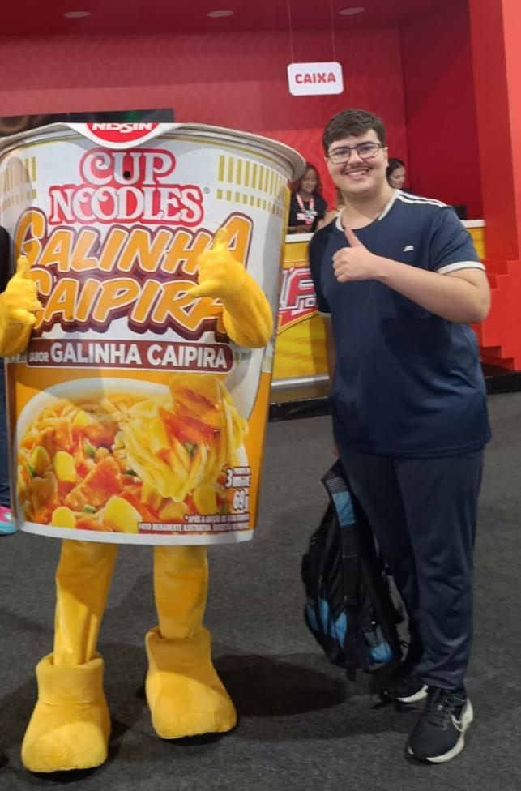
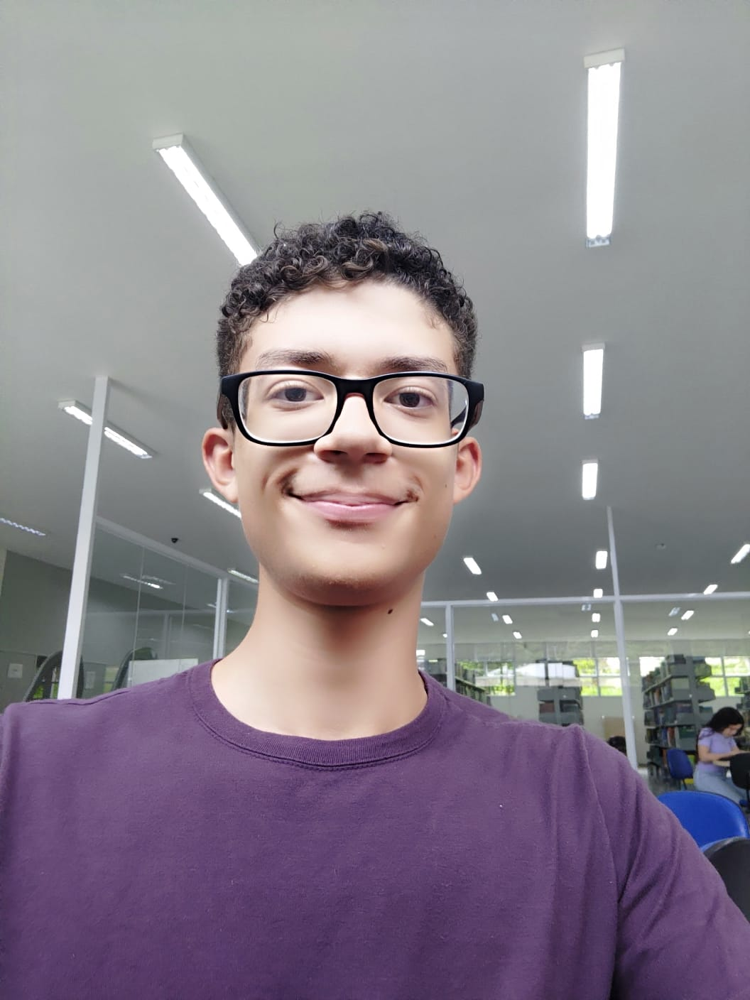

Sobre os desenvolvedores
Arthur Tomazini
Estudante de programação no Instituto Federal. Participei nas pesquisas deste artigo. Gosto de videogames. Caso queira me contatar, clique aqui.
Felipe Ortega

Estudante mediano de programção. Atualmente estou estudando Python, Excel e linguagem front-end. Gosto de Terraria e curto animes e filmes de ação/suspense/mistŕio/ficcção científica. Caso queira me contatar, clique aqui.
Miguel Duram
Estudante de programação. Estudo Python e tenho um certo domínio no front-end. Curte animes shonen. Gosto de jogos de ação e mistério, como Batman - Arkham City. Caso queira me contatar, clique aqui.